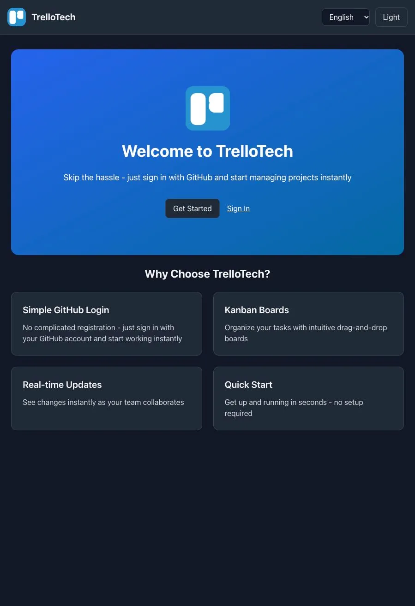

Application Web & Organisation
Trellotech
v1.0Plateforme moderne de gestion de tâches et de projets collaboratifs en tableaux visuels, conçue avec une architecture fullstack modulaire et réactive.
TypeScript • Front & Back • Open SourceExplorer le projet